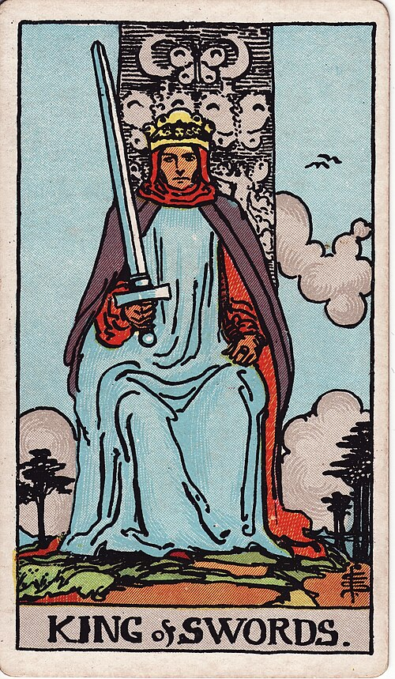

| Arcana | Minor |
| Suit | Swords |
| Element | Air |
| Attribution | Fire of Air |
King of Swords
In shortApply the rule fairly, including to yourself.
Upright
This is reason with the authority to enforce itself — the judge, the strategist, the person whose authority rests on being consistently right and consistently fair. He is unmoved by sentiment and that is the point of him. As advice: apply the principle regardless of who it inconveniences, starting with yourself.
Reversed
Principle without humanity. Logic used to justify cruelty, rules applied to the letter and against the spirit, authority defended rather than exercised. It can also mean advice from someone qualified but not impartial.
The turn
Apply your own rule to yourself first. Then enforce it without apology.
Reading with your own deck?
Sage records the cards you actually pull, writes the reading, keeps every one, and shows you what keeps returning across them. Free, private, no account.